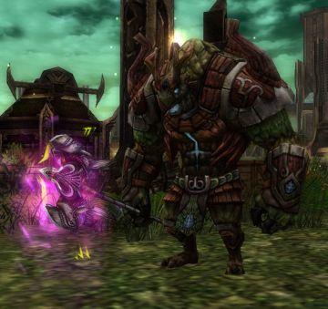

Kurian
Kurians, also known as Porutu, are the latest class to be introduced outside the main four in Knight Online. They are a hybrid of a Warrior and Priest with access to melee abilities and heals as well, a unique transformation, on top of an arsenal of unique crowd control abilities, in the sense that they're unavoidable unlike other RNG based CC's.
They also have a stamina bar on top of mana that every class has, limiting the usage of certain abilities.
Role
Kurians are a highly disruptive class. One that can change the flow of a normal battle if the enemy composition has one of them. Their role is to displace, stun and slow enemies, and support their party members, while providing some extra DPS on the side.
Attributes
The skill kit of a Kurian is comprised of offensive melee abilities, single and party heals, damage over time spells and hard crowd-control abilities that cannot be itemized against.
A Kurian however can only choose to excel at maybe 2 of all those areas at a time, which grants them quite a bit of versatility in their playstyle, only locked behind a reskill.
The existence of a 3rd resource called stamina, exists so that there's some restrictions between using their highly oppressive abilities in quick succession, such as Rush, Pull, Divide Armor and the many melee DoT smash attacks.
Regarding their skill trees, their attack one has access to physical abilities, melee ranged DoTs and to a stun and a pull. The stun has short range, however it is unavoidable, basically drawing an imaginary death zone in a radius around a Kurian, as a 3 second stun, followed by the Kurian's party plus their armor debuff. spells death to just about any class in this game.
Their defense skill tree is a copy paste from the warrior skill tree. That means they get access to Descent too.
As for their 'Devil' skill tree, it is what grants them the ability to transform, use heals and ranged DoTs. Their transform mitigates a set amount of damage per hit, while amplifying HP recovery from any source, including potions and healing spells.
Lastly, their Master skill tree quite differs from other classes. First, they don't get a level 70 passive damage reduction nor a level 62 scroll related skill. At 62 they get a passive HP increase, and at 70 they get access to an ability called Berserk, that trades away all their defense for double their attack power. Last but not least, at level 80, they get a debuff called Divide Armor - a guaranteed slow that effectively works as a priest' Malice in its armor reduction trait.
Their main stat attribute is Strength and their secondary is Health.
Strategy
As a Kurian, your target in PvP is to lockdown key targets and quickly dispose of them with the assistance of your party. Kurian is not a very powerful solo melee class, so it is always recommended to have a heavy hitter alongside you.
That is, if you're using the common Attack build that focuses on Rush usage and possibly Pull (a liability in offcial servers as far as I'm aware).
However, with a focus on DoT skills and Devil skills, Kurian can become a true powerhouse of a solo class, trading away their party utility for insurmountable DoT damage for any class that lacks a way to clear it with Cure Disease. Very powerful for roaming, but nigh useless in party situations.
Kurian isn't a very hard to play class, so you shouldn't worry about your positioning as much. Descent will save you from most exchanges, and if you don't have it in your build, then Devil transform will allow you to mitigate a % of incoming damage all while doubling your healing! That's right, 1440 HP potions or 2160 if you're using Ibex pots!